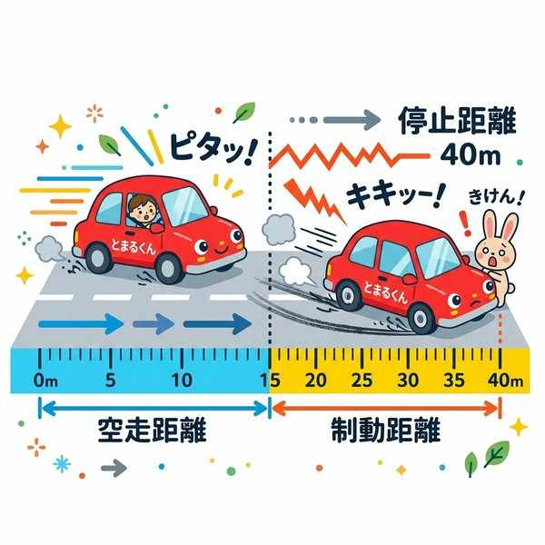
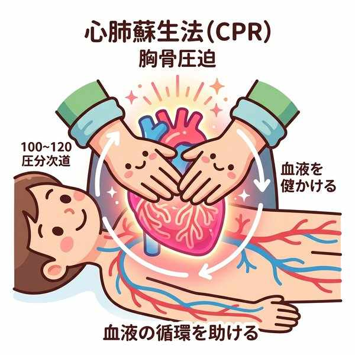
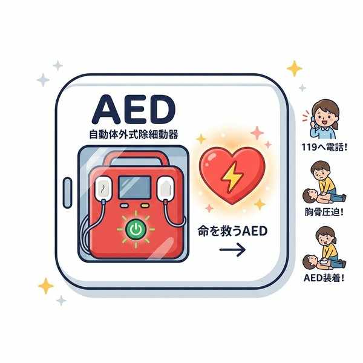
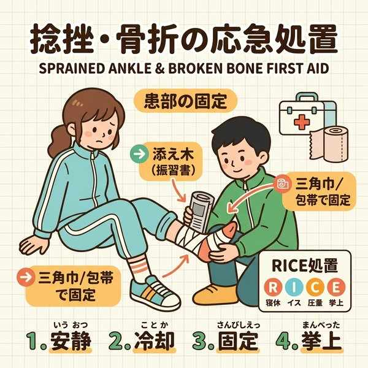
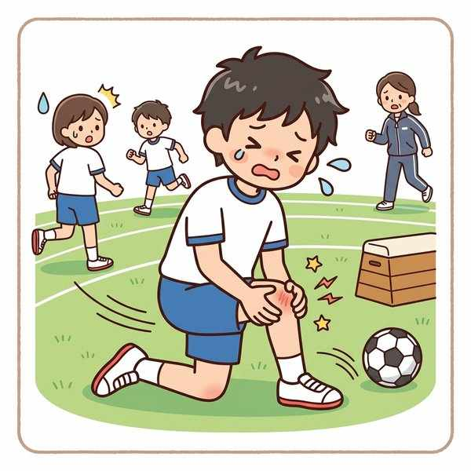

単元4: 傷害の防止と安全な生活
日常のけがや交通事故、自然災害、あるいは犯罪などの「傷害」は、いくつかの要因が重なって発生します。この単元では、傷害が起こる要因、交通事故や自然災害への備え、そして命を救うための心肺蘇生法や応急手当のやり方を整理します。
1. 傷害（けが・事故）が起こる要因
傷害は、人の行動や心理状態に関わる「人的要因（主体の要因）」と、周囲の状況や設備に関わる「環境要因」が重なることで発生します。
- 人的要因：不注意、焦り、体調不良、知識・技能の不足、ルール無視など。
- 環境要因：濡れた床、廊下に放置されたモップ、悪天候、暗い道など。
- 中学生の現状：けがの多くは学校内の「部活動や体育の授業中」に発生し、交通事故では「自転車乗車中」が最も多くなっています。
2. 交通事故の3要因と車両の危険
交通事故は、主体要因（人的要因）、環境要因に、ブレーキの整備不良などの車両要因が加わって起こります。
① 自動車の危険特性
- 死角（しかく）：運転席から、車の構造（ピラーなど）や荷物の影響で見えない部分。
- 内輪差（ないりんさ）：自動車が曲がるときに生じる、前輪と後輪の通り道の差（後輪の方が内側を通る）。
② ブレーキと停止距離の関係
自動車は急ブレーキをかけてもすぐには止まれません。以下の関係式はテストで必ず出ます。
・空走距離（くうそうきょり）：運転者が危険に気づき、ブレーキを踏んで実際にきき始めるまでに走る距離。
・制動距離（せいどうきょり）：ブレーキがきき始めてから、車が完全に停止するまでに進む距離。

空走距離、制動距離と停止距離の関係
3. 犯罪の防止と自然災害への備え
- 犯罪が起こりやすい場所：不審者が侵入しやすく、周囲から見えにくい場所（「入りやすく、見えにくい」場所）。
- 自然災害の備え：地震や台風などがあります。なかでも地震は正確な予知が現在でも極めて困難です。
- 一次災害：地震発生と同時に起こる、建物の倒壊や家具の落下など。
- 二次災害：地震の後に続いて起こる、火災や津波（つなみ）など。※海岸付近で強い揺れを感じたら、津波警報を待たずにすぐ高台へ避難します。
- 緊急地震速報：大きな揺れ（主要動）が来る数秒〜数十秒前に発表される速報。
- ハザードマップ（防災マップ）：地域の危険箇所や避難所をまとめた地図。
- ライフライン：電気、ガス、水道など、生命を維持する基盤インフラ。※台風や大雨の際、川の様子を見に行くのは厳禁です。
4. 応急手当と心肺蘇生法
その場に居合わせた人（バイスタンダー）が行う一時的な手当を応急手当（おうきゅうてあて）といいます。
① 止血法（血の止め方）
大量に出血している場合は、傷口に清潔なガーゼやハンカチなどを直接当てて強く押さえる直接圧迫止血法（ちょくせつあっぱくしけつほう）を行います。これが最も安全で効果的です。
② 心肺蘇生法（しんぱいそせいほう）の流れ
| ステップ | 具体的な処置内容 |
|---|---|
| 1. 反応の確認 | 肩を優しくたたきながら声をかける。反応がなければ大声で助けを求め、119番通報とAEDの手配を誰かに頼む。 |
| 2. 呼吸の確認 | 胸と腹部の動きを見て、ふだんどおりの呼吸があるか10秒以内で確認する。呼吸がない、またはしゃくりあげるような不規則な呼吸（死戦期呼吸［しせんきこきゅう］）の場合は「呼吸なし」と判断する。 |
| 3. 胸骨圧迫 | ただちに胸骨圧迫を開始する。 ・深さ：胸が約5cm沈むように強く。 ・テンポ：1分間に100〜120回の速さで絶え間なく。 ・方法：肘を伸ばし、体重を乗せて垂直に押す。（※人工呼吸ができる場合は、圧迫30回：人工呼吸2回の割合で行うが、できなければ圧迫のみを続ける） |
| 4. AEDの使用 | AEDが届いたら電源を入れ、音声ガイダンスに従う。 ・電極パッドは衣服を脱がせて肌に直接貼り付ける。 ・AEDが心電図を解析中、および「電気ショック」のボタンを押す際は、感電を防ぐため誰も傷病者に触れていないことを必ず確認する。 |

胸骨圧迫（約5cm沈む強さ、100〜120回/分のテンポ）

AED（自動体外式除細動器）の使用
③ 日常のけがの応急手当
- 骨折（こっせつ）：骨折した部分が動かないよう、上下の関節を含めて添え木で固定するのが原則です。
- 脱臼（だっきゅう）と捻挫（ねんざ）：骨が関節からはずれるのが脱臼。関節に無理な力が加わり靭帯が傷つくのが捻挫。
- RICE処置：捻挫や打撲の際は、すぐに冷やして安静にするのが基本です。
- Rest（安静）、Ice（冷却）、Compression（圧迫）、Elevation（挙上）。※温めたり揉んだりするのは悪化させるため絶対にNG。

添え木を用いた骨折の固定

打撲や捻挫へのRICE処置（冷却）
🔥 定期テスト対策・暗記のコツ
① 空走・制動・停止距離の計算と定義
「停止距離 ＝ 空走距離 ＋ 制動距離」。それぞれの言葉の定義（ブレーキを踏むまでが「空走」、踏んでから止まるまでが「制動」）を確実に暗記しましょう。
② 胸骨圧迫の「数値」
「沈む深さ ➔ 約5cm」「テンポ ➔ 1分間に100〜120回」。この数値は選択肢や穴埋め問題で非常にひっかかりやすい数字です。
③ 捻挫・打撲の手当ては「冷やす」
捻挫や打撲は「すぐ冷やす」。お風呂で温めたりマッサージしたりするのはNG。英語の頭文字を取った「RICE（ライス）処置」のスペルと意味を答えられるようにしましょう。